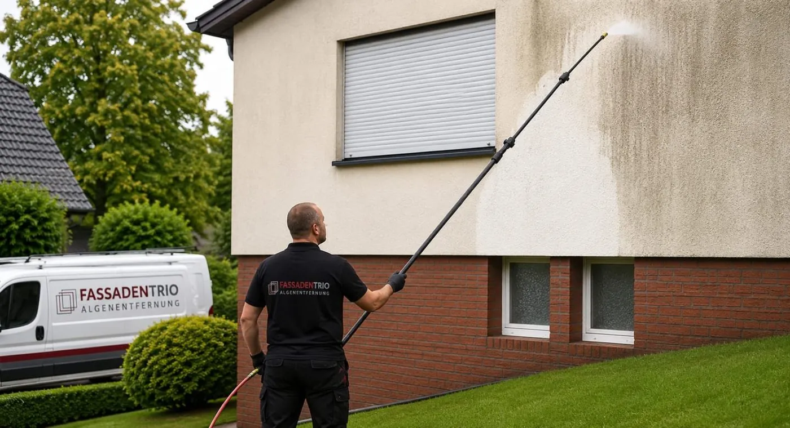
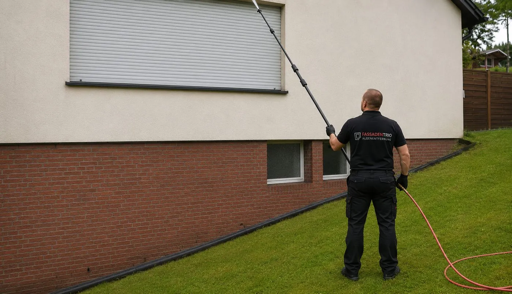
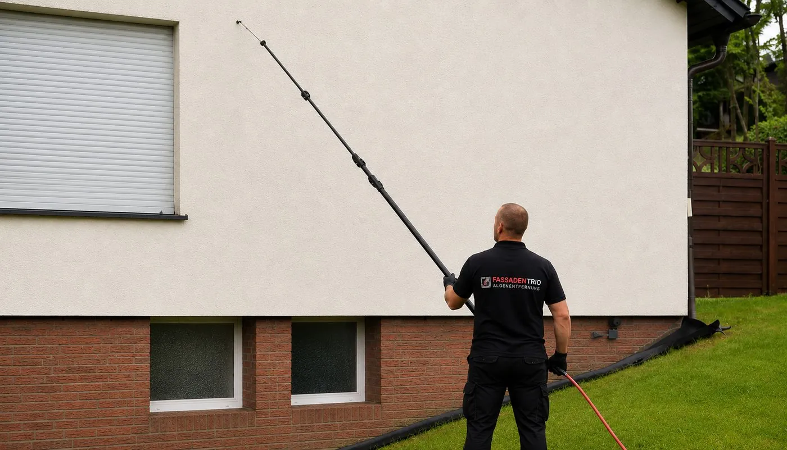

The FassadenTrio process: three phases to a clean facade
Apply the cleaning agent, rinse with low water pressure, apply long-term protection. This is how your facade gets clean and stays clean.

Phase 1: apply the cleaning agent
Our cleaning agent, developed specifically for facade cleaning, is applied over the whole surface of the facade. The technicians work with telescopic lances up to 12 metres long. This removes the need for laborious scaffolding.
Phase 2: rinse the facade
As soon as the algae, mould and fungi have loosened, we rinse the soiling off with clear water. The water pressure of the telescopic lance is gentle on the facade. It is not damaged; only the dirt is removed.

Phase 3: apply long-term protection
Finally we apply our transparent long-term protection. It penetrates deep into the pores and delays regrowth for up to 5 years. The protection can be reapplied at any time.

The result
The facade looks like it did on day one again, without new paint. The process cleans quickly and postpones costly repainting by many years. You can see examples under References.
Why we work with low water pressure
High water pressure can damage render. In our process the cleaning agent therefore loosens the growth, and the water only has to rinse it off. More on this in the guide: Clean the facade with a pressure washer?
What we remove
- Algae
- Mould
- Fungal growth
- Moss
- Lichen
- Fine dust
- Road dust
- Soot
- Grease
From the ground to the gable, without scaffolding
The drawing shows the scale: with a telescopic lance up to 12 metres long, a technician reaches the gable of a house from the ground. We clean tall buildings from an aerial work platform.
Frequently asked questions
Will the facade be damaged during cleaning?
No. We work with low water pressure. The cleaning agent loosens algae, mould and fungi, and we then rinse them off with clear water. The render stays undamaged.
Does scaffolding have to be put up?
No. Our technicians work from the ground with telescopic lances up to 12 metres long. For taller buildings we use an aerial work platform. There are no scaffolding costs.
How long does the facade stay clean?
After cleaning we apply a transparent long-term protection. It delays regrowth for up to 5 years. The protection can be reapplied at any time.
Can the long-term protection be renewed?
Yes. The facade protection can be reapplied at any time.
See the result on your own building
We clean a section of your facade free of charge. Then you decide whether we should clean the whole facade.